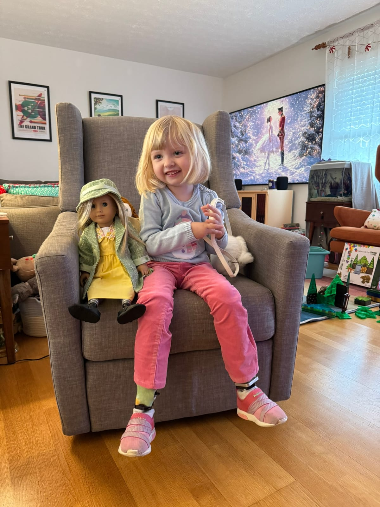
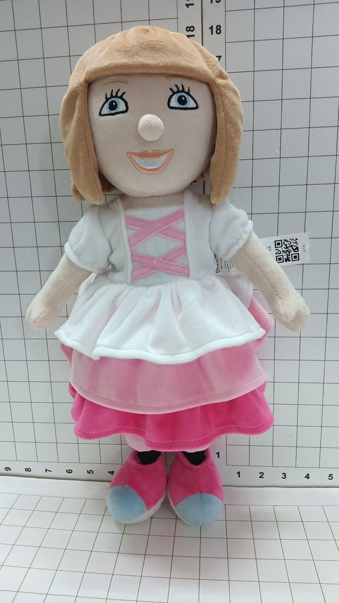
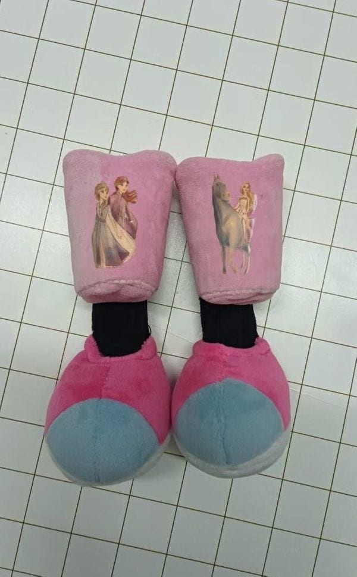
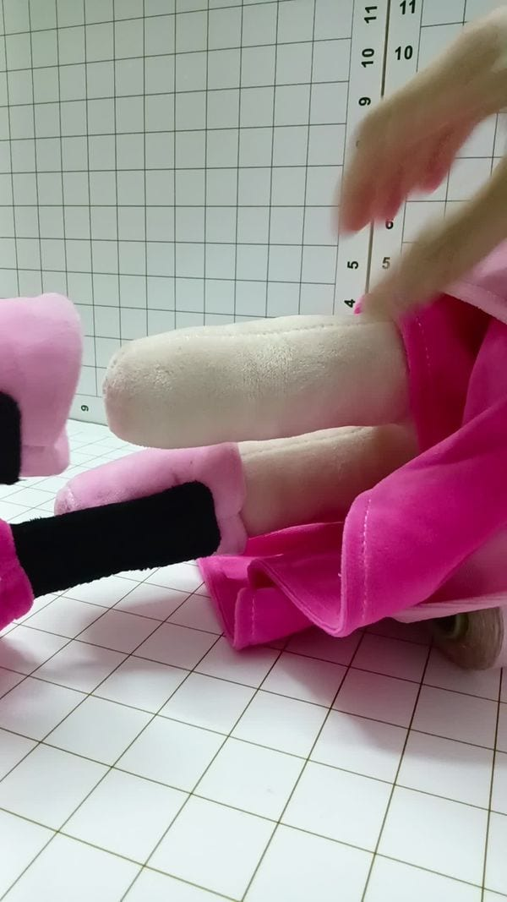

Representation in the things kids play with can be just as meaningful as what they watch or read. Below are toys and dolls that celebrate limb differences and help kids feel seen.
American Girl
A Step Ahead Prosthetics helps families modify American Girl dolls by adding custom prosthetic legs at no cost. It’s a wonderful way for kids with limb differences to see themselves in the toys they play with.
We bought an American Girl doll for Gwen and shipped it to A Step Ahead. Their team added custom prosthetic legs that look amazing and even come off, which makes them extra special. It turned one of her favorite toys into something that truly represents her.

Gwen with her doll from A Step Ahead Prosthetics
Barbie
Barbie has slowly evolved to reflect a wider range of children and experiences. The first Barbie friend with a disability, Share a Smile Becky, was released in 1997. Becky used a wheelchair and quickly became a hit, though her wheelchair famously did not fit inside the Barbie Dreamhouse. She was discontinued a few years later but marked the beginning of a new era for representation in toys.
In 2019, Mattel released Barbie Fashionista #121, the first Barbie with a prosthetic leg. That model included a removable leg and was designed with input from prosthetic specialists to make it look and move realistically. Since then, several more dolls have been added to the lineup, including Fashionista #146 (2022) and Ken Fashionista #212 (2023), both featuring prosthetic legs with updated designs. A current option, Fashionista #189 (2022), continues to appear in stores, and Barbie Deluxe Style Doll #2 (2025) introduced a prosthetic leg that bends at the knee for more natural movement. You can also find a prosthetic-leg doll in the careers line: Barbie Careers Interior Designer comes with a prosthetic leg, a tablet, and a design sheet for simple role play. Together, these dolls show that representation is now a regular part of the Barbie brand rather than a limited release.
Mattel has also introduced other inclusive dolls, such as Barbie Fashionista #187 with hearing aids, Fashionista #132 with vitiligo, Fashionista #124 with no hair, and Fashionistas #208 and #229 representing a person with Down syndrome. In 2024, Fashionista #228 joined the collection, featuring a Barbie with a visual impairment, complete with a white cane and braille packaging. These additions help make the Barbie world more reflective of the real one and offer kids more ways to see themselves and their friends in the toys they play with.
Mayana & Friends
Mayana & Friends is a small Filipino-Canadian family business that makes plush animals with limb differences. The company started when the founder’s child was born with an upper limb difference, and she wanted to create toys that reflect the real world our kids live in. Each character has its own little story, helping families talk about differences in a natural, friendly way.
Gwen’s favorite is Lou the Cat, who has an above-the-knee limb difference and loves exploring outdoors and looking for bugs under logs and rocks. Lou is curious and confident, always learning new things in her own way.
There’s also Dougie, who loves music and makes everyone laugh; Edie, who finds joy in gardening and growing raspberries; Miko, a creative monkey with a knack for art; and Ziggy, a sporty alligator who dreams of the Paralympics. Together they make a world where every character is different, but they all belong.
What’s great about Mayana & Friends is how naturally it fits into playtime. These toys make space for every kind of kid to see themselves and their friends in the stories they imagine.
Budsies
Budsies offers a fun and easy way to create a doll that looks like your child. Their “Selfies” service lets you send in a photo, and their team turns it into a custom plush version, same clothes, hairstyle, and even prosthetic legs.
For kids with limb differences, it’s a simple way to have a toy that truly represents them. You can include any detail you’d like, and the finished doll comes back soft, friendly, and personal. It’s one of those ideas that seems small but can mean a lot when a child sees themselves reflected in something they can hold.



Autumn (LEGO Friends)
In 2023, LEGO introduced Autumn, one of the new Friends characters, and she’s the first LEGO minidoll with a molded limb difference. Her design includes a visible upper limb difference as part of who she is, not something added or removed later.
Autumn lives on a ranch, spends time outdoors, and loves caring for animals. Her sets, like Autumn’s Room, reflect her interests with things like plants, art supplies, and nature-themed accessories. It’s a nice example of a popular toy line including characters who look a little different without making it the focus of their story.
Our Generation Dolls with Prosthetic Legs (Target)
By 2021, Target’s Our Generation line had introduced two 18-inch dolls featuring prosthetic legs, Kacy and Suzee. These dolls were part of Our Generation’s effort to bring more inclusion and representation into their toy line. Both came with a removable prosthetic leg decorated with small heart designs and wore a floral dress with a pink cardigan. Their stories focused on friendship, imagination, and everyday play, showing that limb differences are simply part of life.
Kacy was released around 2020 and has long blonde hair and brown eyes. She came with a detachable prosthetic leg and a bright, friendly personality. Suzee followed in 2021, with a medium skin tone, dark brown hair, and brown eyes. Like Kacy, she included a removable prosthetic leg with heart details and wore the same cheerful outfit.
Although these dolls are no longer in production, they can sometimes be found on eBay and other secondhand resale sites.